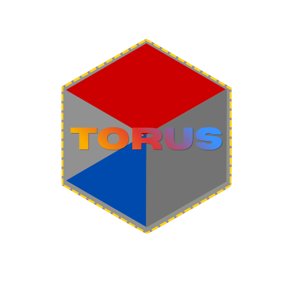

Welcome to TORUS Online! This site is the dedicated site to explaining the hows, whys, and whats about TORUS. So...let us begin!
This compiler for my custom language, TORUS, is going to be written mutliple times for efficiency purposes, first in C++. I plan to go down the line of C, and maybe even one day in assembly for a specific computer architecture. Since I am self taught as of this point when it comes to programming, I am using Robert Nystrom's Crafting Interpreters (link to guide) internet guide as a launch pad to learn how the systems that translate source code in order to "send to space" my own project.

I highly recomend Mr. Nystrom's guide, his work is stellar education and very comprehensible, though I do recomend Richard Feynman's self-education method(s) for learning anything. Originally, this was supposed to be a project for me and my friend, but so far he has done nothing more than name it. Yes, the name TORUS was not my own invention, rather was the brain child a peer of mine. The idea of programming my own compiler and all infrastructure development and programming has been done by me.